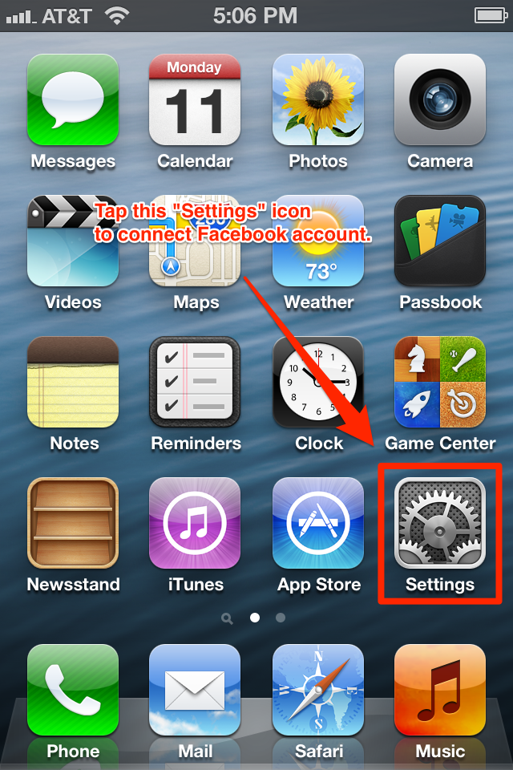
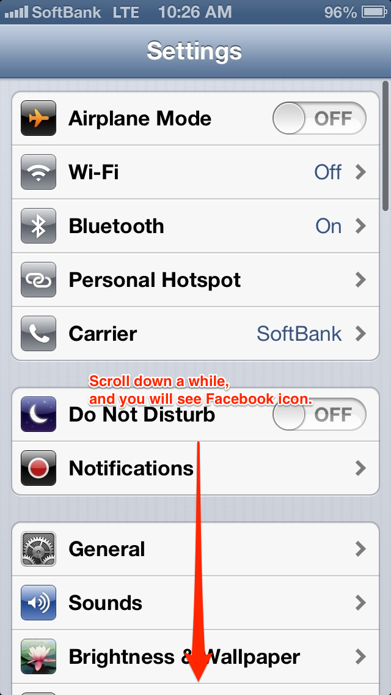
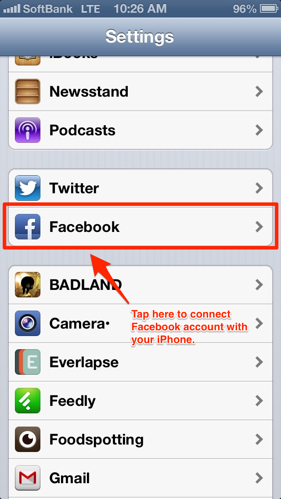
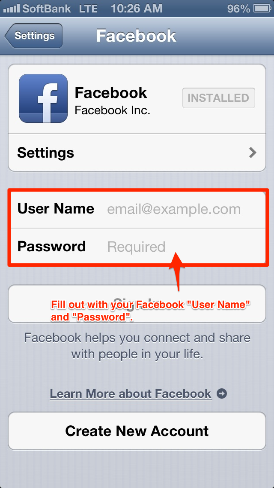
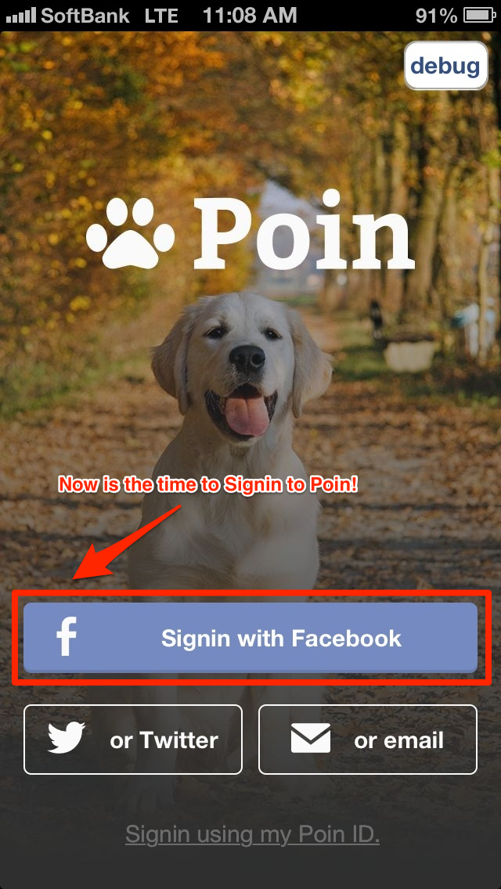

Maybe because you have not configured Facebook on your iPhone.
You can fix this from “Settings” on your iPhone.
1. Go back to your home screen and find “Settings” on your iPhone.
2. Tap the “Settings” icon, you will see the image below.
3. Scroll down a while and you will see Facebook icon.
4. Tap Facebook icon and you’ll see empty fields, “User Name” and “Password.” Enter your Facebook User Name and Password to configure Facebook with your iPhone.
5. Well done! Now, open your Poin app and tap “Signin Facebook” and it should work!
